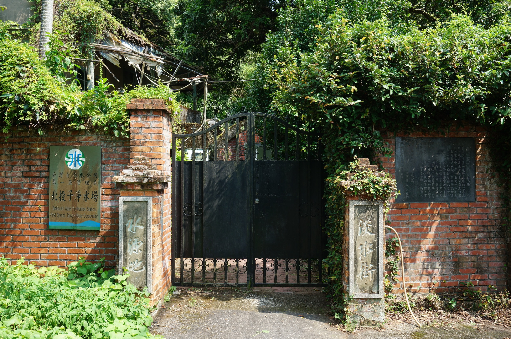

一杯水的故事
早期台灣民眾取水不易，大多只能透過民眾自己鑿井或自河塘取水，過程艱辛。
首任台灣巡 撫劉銘傳即為此在台北城內挖掘了三口公共井，為台北城民供水，這是台灣地區第一座公共供水系統。
日本人接收台灣後，更為了解決台灣水文環境的衛生問題而困擾。
曾建議以一億日元（或有稱1500萬法郎）將台灣賣予法國的台灣總督 乃木希典的母親正是因瘧疾而在台去世。
1896年，日本委請英國人巴爾頓（William Kinninmond Burton）來台協助建設公共設施，爾後巴爾頓也因探查水源地不幸感染瘧疾而病逝。
1899年，台灣地區第一座自來水道「滬尾水道」完成，至今台語中仍稱自來水為「水道水」。

(滬尾水道源頭, 雙峻頭水源地入口處。/取自淡水維基館, Rocio攝)
一百年來，台灣人一直為了能喝上一杯乾淨的水而努力，
目前台灣的自來水已符合「飲用水標準」，為何大多人卻不選擇生飲呢？
是對環境水質的不信任嗎？或是其他原因呢？
台灣的自來水
台灣地區的自來水主要由台灣自來水公司負責，但台水公司並不負責台北地區（由臺北自來水事業處負責）、連江縣、金門縣（由金門縣自來水廠負責）的自來水供應。
業務上，台水將負責地區劃分為十二個區域，其中台南位於「第六區」。
自來水如何取得
自來水指的是取用地面、地下水後經過一系列處理過程而符合飲用水水質標準的水體。
這些過程包含：混凝、沈澱、過濾、消毒（加氯），一些高級淨水廠還會加上離子交換、臭氧、活性碳、逆滲透等程序
台灣的淨水站列表:台南現各淨水站及水質資訊
自來水
自來水從哪來?
台南水庫蓄水區域
自來水大多引自河流上游的攔河堰或水庫, 除了確保水質外更可確保供水穩定攔河堰?水庫?有什麼不一樣
攔河堰跟水庫的最大差別在於高度，攔河堰只能讓河水停留的時間增長, 以利抽水, 其公用並非儲水。
當河川處於荒水期時, 攔河堰仍會喪失其供水功能,
這也是台灣南部的供水方式大多是興建水庫而非攔河堰的關係。
(您也可以從上圖看出, 北部較少水利工事)
大台南主要供水方式即為使用興建於曾文溪上游之曾文、南化水庫。
而如大高雄地區，則因原計畫「美濃水庫」遭遇環境議題，至今尚未開始動工的關係，
改採於高屏溪興建攔河堰輔以自台南地區的南化、曾文水庫引水解決。
how?自來水怎麼來?
自來水的處理程序分為取水、導水、淨水及送水等過程。
取水係指在水源地（河川、湖泊或水庫）設置取水口，利用抽水機或自然重力方式將原水送至導水渠道。
而導水則是將取到的原水經由導水渠道導入淨水場。
進入淨水場的原水經淨化的程序後變成自來水，稱為淨水。
最後再將自來水以輸水管線配送至用戶處的過程，即為送水。
x「河川污染程度指數, River Pollution Index」簡稱「RPI」。RPI指數係以水中溶氧量 （DO）、生化需氧量（BOD5）、懸浮固體（SS）、與氨氮(NH3-N）等四項水質參數之濃度值，來計算所得之指數積分值，並判定河川水質污染程度。